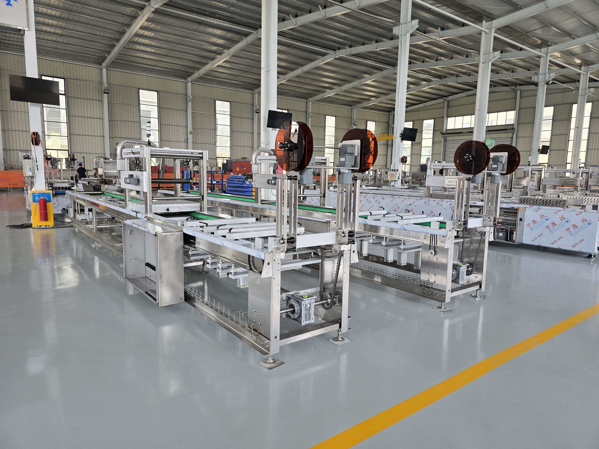
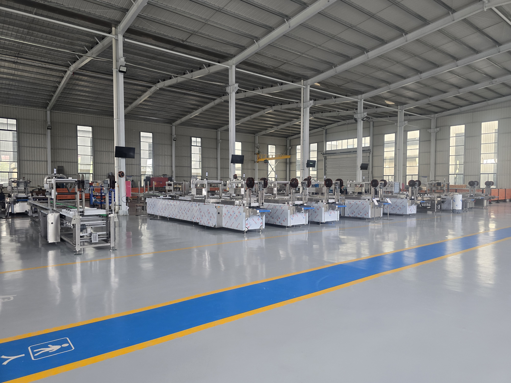
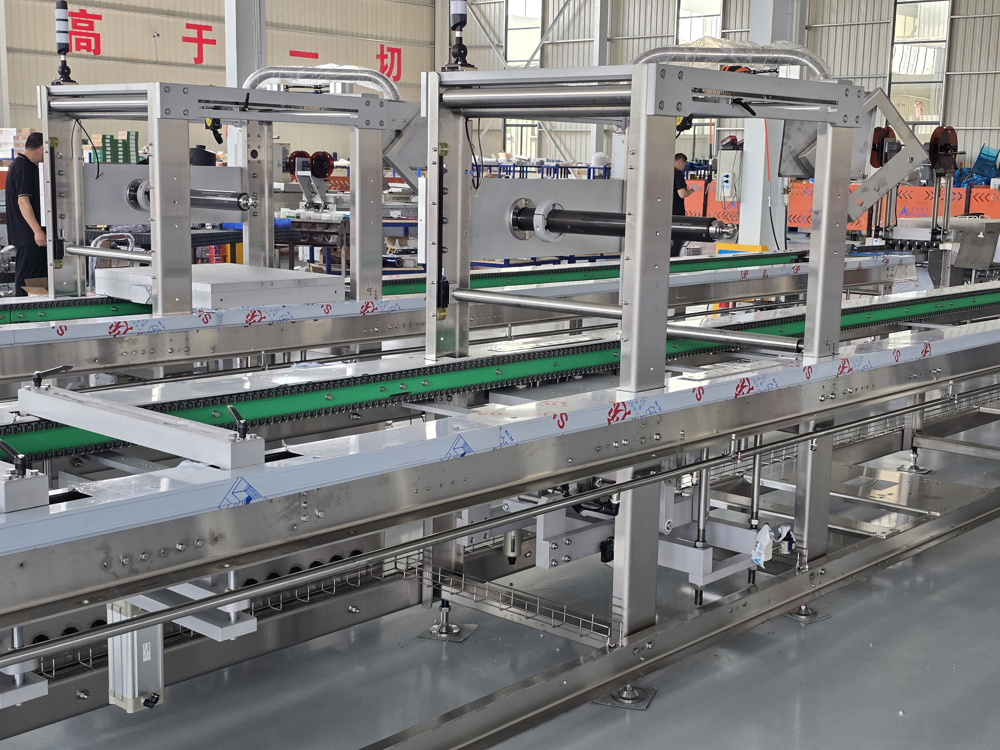
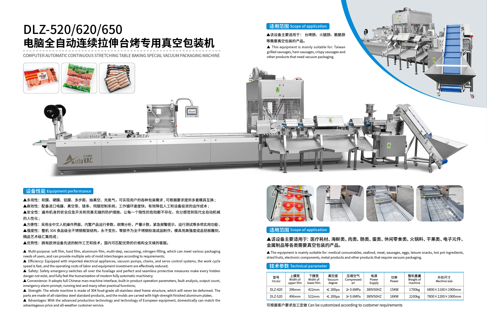

PLC vs. Servo Control: Why Schneider Systems Lead in Thermoforming
An in-depth look at how advanced PLC and servo control systems improve packaging precision, reduce waste, and increase throughput.
May 28, 2026Industry trends, technical guides, and application stories from the world of vacuum packaging machinery

An in-depth look at how advanced PLC and servo control systems improve packaging precision, reduce waste, and increase throughput.
May 28, 2026
How automated thermoformers with integrated weighing systems are solving the labor and consistency challenges in hot pot ingredient packaging.
May 15, 2026
A real-world case study: switching from single-sided to double-sided thermoforming packaging increased production by 120% while reducing labor costs.
April 22, 2026
A practical maintenance guide covering daily checks, mold care, vacuum pump servicing, and how to extend your machine's service life.
April 8, 2026
Understanding how MAP technology combined with thermoformer packaging extends shelf life, reduces food waste, and creates premium retail products.
March 19, 2026
A comprehensive comparison guide to help food manufacturers select the optimal thermoformer model based on product type, volume, and budget.
March 5, 2026